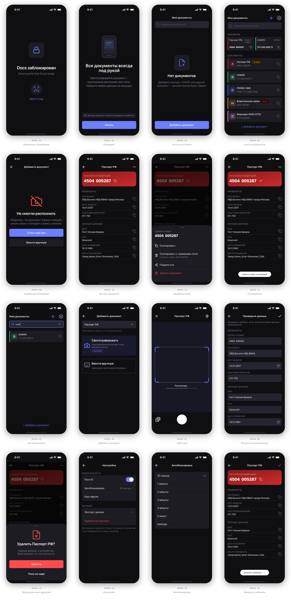
| Задание | — приложение для сканирования и хранения документов |
| Платформа | — iOS |
| Инструмент | — Figma |
| Экранов | — 15 |
| Школа | — Бюро Горбунова, вторая ступень, 20 поток |
Спроектировать интерфейс приложения для сканирования, распознавания и поиска данных документов. Пользователь фотографирует документ — приложение распознаёт поля. Поиск мгновенно находит любое значение.
На курсе задание было — нарисовать 3–5 экранов которые демонстрируют ключевые сценарии. Я сдал пять экранов: список документов, добавление через сканирование, форма ввода, детальный экран, поиск.
Преподаватель отметил конкретные проблемы:
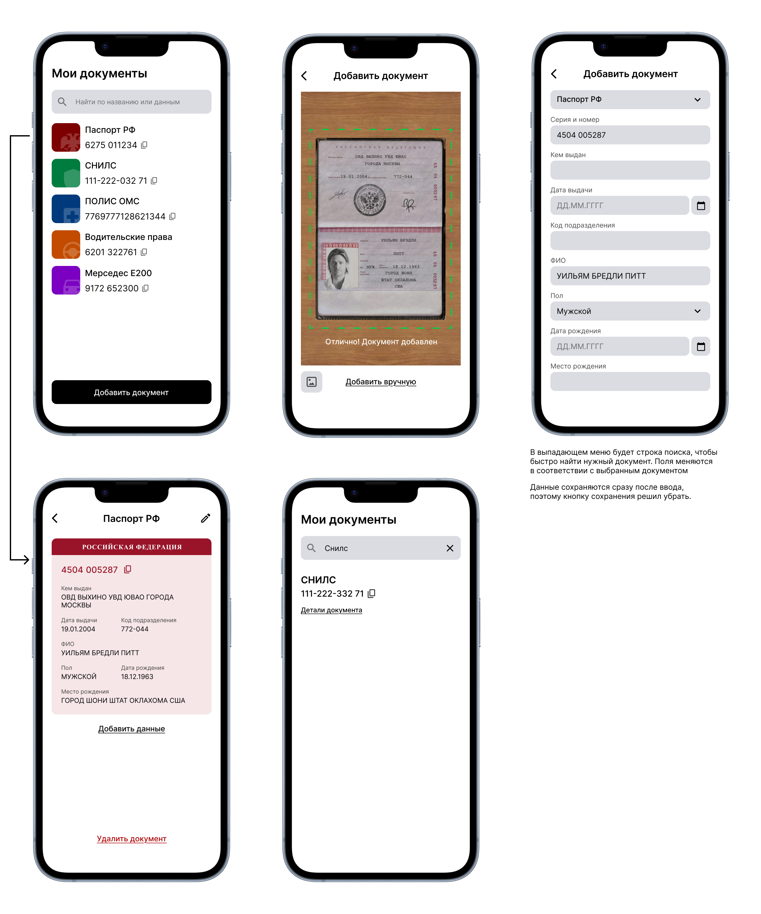
Версия времён курса. Базовый флоу есть, но паттерны непоследовательны, а некоторые решения сломаны логически.
После курса я вернулся к работе и решил не просто починить замечания, а переосмыслить продукт целиком. Вопрос стал другим: не «как нарисовать пять экранов», а «каким должно быть это приложение, если делать правильно?»
Это потребовало начать сначала — с концепции, а не с правки экранов.
Курсовая версия — пассивное хранилище. Открыл, нашёл, скопировал. Переработанная версия — умный инструмент. Приложение помнит, что ты искал, показывает истекающие документы, даёт два режима копирования для двух разных сценариев.
Объём тоже вырос: пять экранов → пятнадцать. Но не потому что нужно было показать больше. А потому что пять экранов без состояний ошибок, без онбординга, без настроек безопасности — это не продукт, а скетч продукта.
Пришёл на почту получать посылку — паспорт дома. Нужен ВИН для заказа запчасти — техпаспорт в другом конце квартиры. Хочешь войти в Госуслуги — забыл где СНИЛС.
Это не редкие ситуации. Это происходит постоянно.
Задача приложения — не «управление документами». Задача — дать нужные данные за десять секунд, стоя на почте с телефоном в руке. Это определило все дизайн-решения.
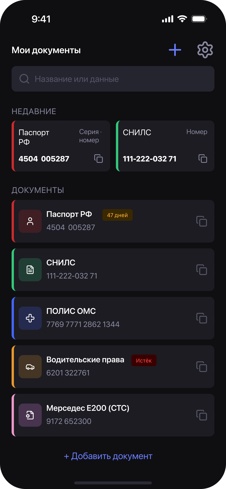
Недавно скопированные поля — сразу на главном экране. Открыл приложение — данные уже видны.
Большинство приложений-хранилищ пассивные: ты сам идёшь искать нужное. Умное приложение должно понимать, что тебе понадобится.
Секция «Недавние» на главном экране — это и есть главная UX-идея. Если вчера ты копировал серию паспорта — сегодня она на экране без единого тапа.
Приложение помнит паттерн использования.
Пять сценариев, которые нужно было закрыть:
Найти данные быстро — открыл, начал вводить в поиск, скопировал. Три действия, десять секунд.
Добавить документ — сфотографировал, приложение распознало, проверил поля. Ручной ввод как запасной вариант.
Посмотреть документ целиком — все поля сразу, удобно для заполнения анкет.
Повторное использование — недавние поля на главной, быстрое копирование тапом.
Безопасность — разблокировка по лицу, автоблокировка, данные только на устройстве.
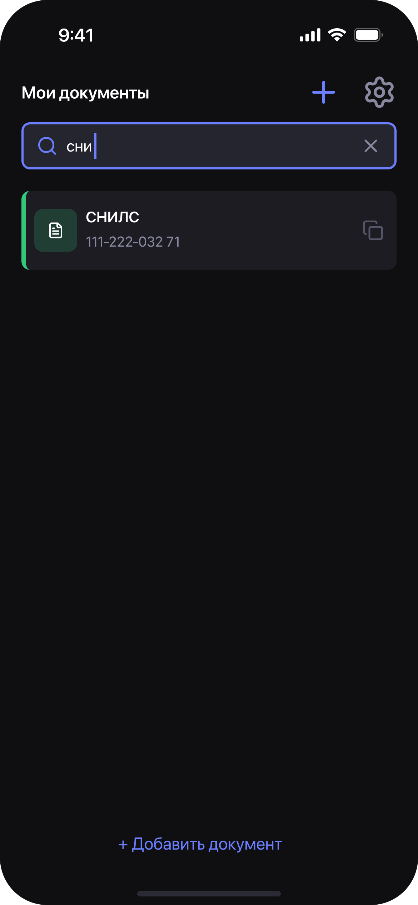
Поиск работает по названию документа и по данным внутри. «сни» → СНИЛС с номером.
Поиск — не фича сбоку. Это основной способ взаимодействия для человека, который уже знает, что ищет. Строка поиска всегда видна на главном экране — не спрятана за кнопкой.
Результаты поиска показывают те же карточки, что и список — не новый паттерн, не ссылки. Один компонент везде.
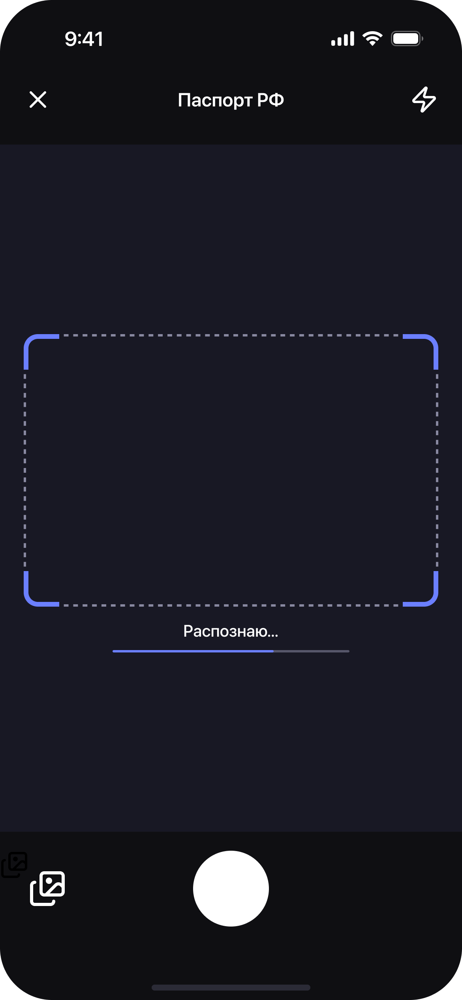
Минимум UI. Прогресс-бар внизу показывает, что распознавание идёт.
Во время съёмки интерфейс не мешает — только рамка документа и прогресс. Никаких плашек и рамок поверх документа: они создают ощущение, что приложение тупит.
Автосъёмка, когда документ в фокусе — пользователю не нужно нажимать кнопку.
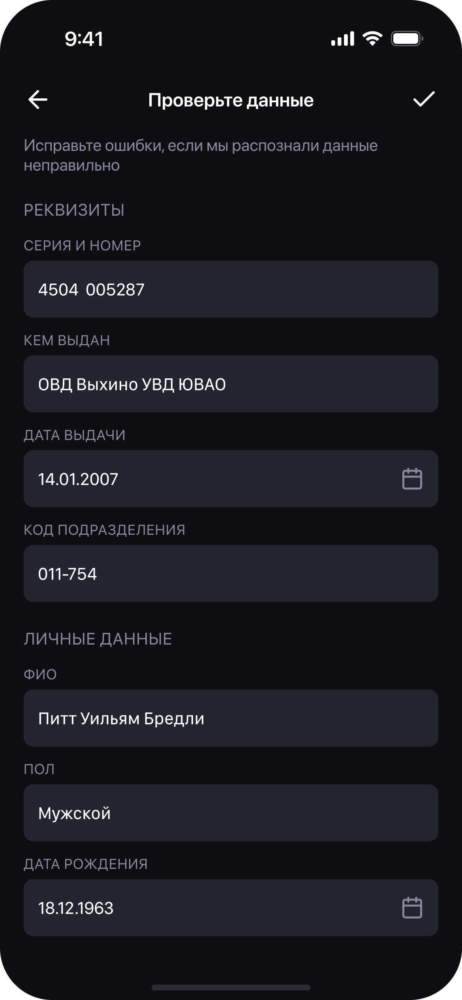
Поля разбиты на две группы: «Реквизиты» и «Личные данные». Пользователь проверяет и правит, если нужно.
Явная кнопка «Сохранить» в навбаре — исключение из правила автосохранения. Распознавание требует осознанного подтверждения: система могла ошибиться, пользователь должен это проверить.
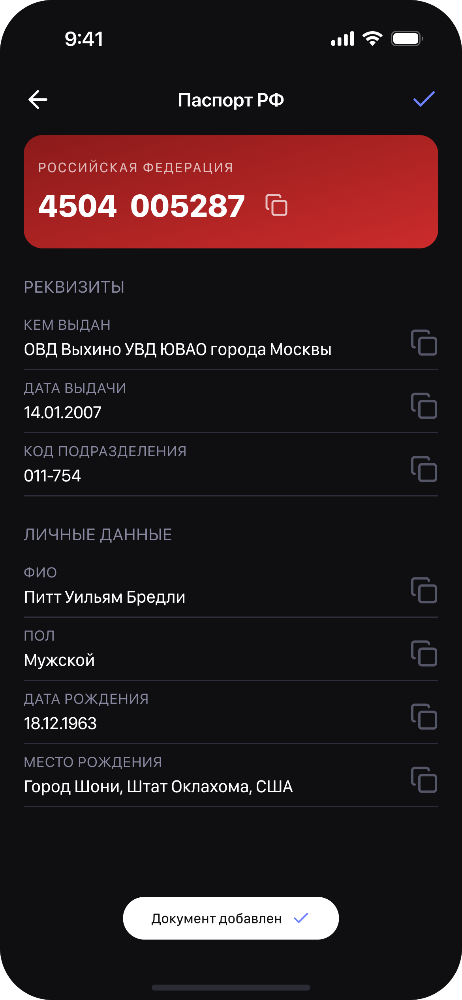
После сохранения — сразу детальный экран документа. Тост внизу подтверждает: сохранилось.
Можно было сделать отдельный экран успеха с большой галочкой и кнопкой "Готово". Но это лишний шаг — пользователь нажимает «Готово» и оказывается на том же детальном экране.
Поэтому: сохранение → сразу детальный экран. Пользователь видит результат и может сразу проверить данные или скопировать нужное поле. Тост внизу и галочка в навбаре (появляется на пару секунд) дают достаточный сигнал, что всё прошло успешно — без прерывания сценария.
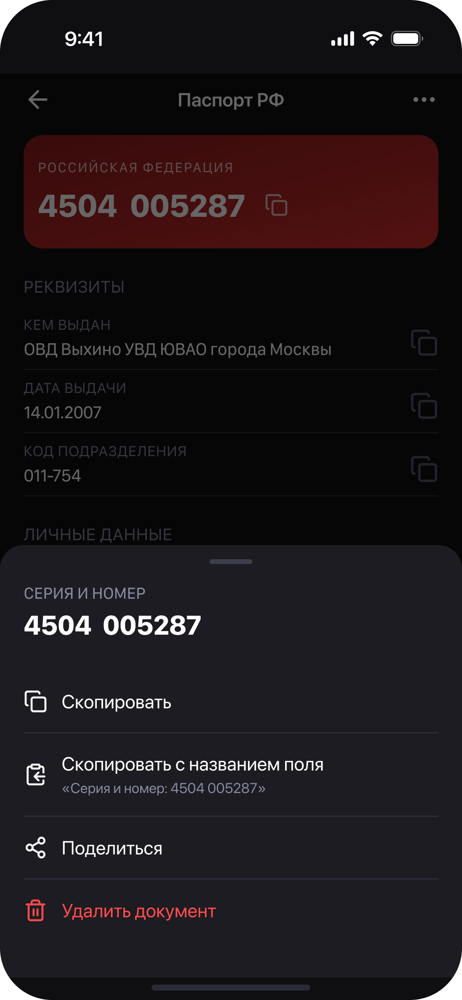
Долгий тап или тап на оверфлоу меню — шторка с вариантами.
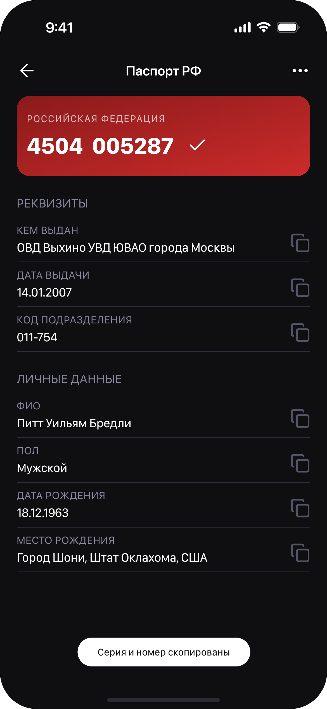
Тап на поле или иконку — скопировалось.
Два режима копирования для двух сценариев. Быстрый тап — для стандартного случая: нужно просто скопировать значение. Долгий тап — для сложного: нужно скопировать с названием поля для заполнения анкеты («Серия и номер: 4504 005287»).
Toast внизу подтверждает действие — без модальных окон, без прерывания сценария.
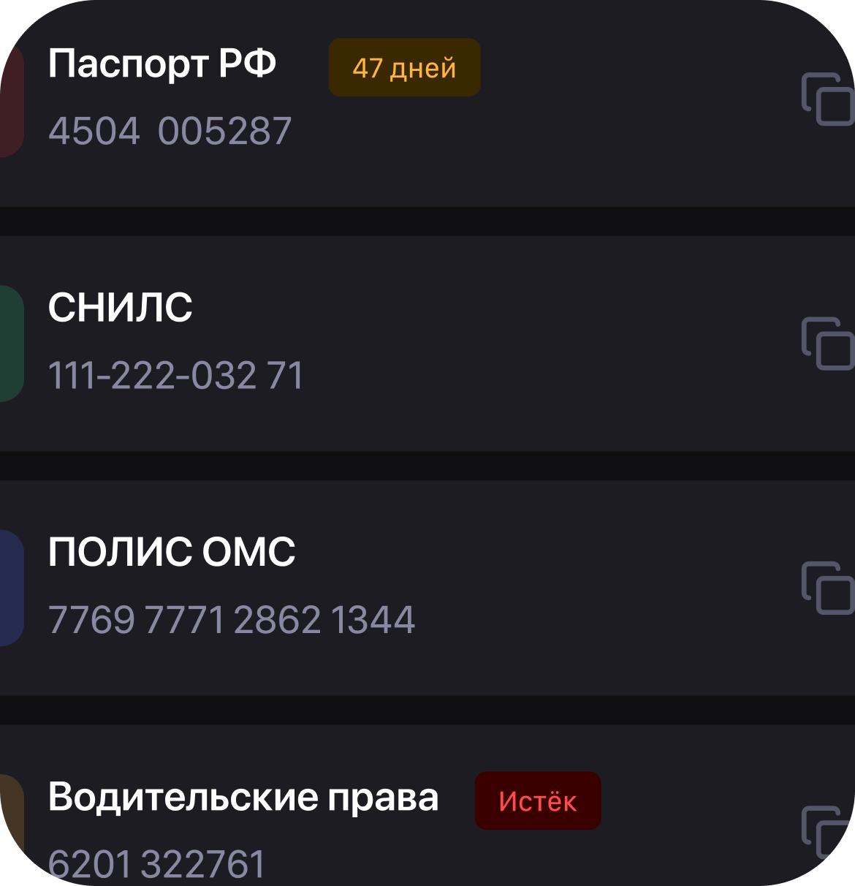
Паспорт истекает через 47 дней — приложение об этом знает. Истёкший документ — красный.
Это делает приложение живым инструментом, а не архивом. Хранилище, которое молчит, пока паспорт не перестал работать — плохой продукт.
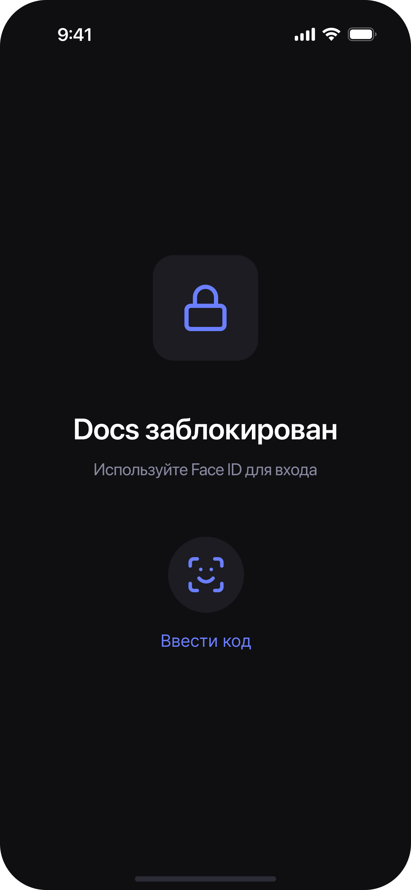
Биометрический замок при входе.
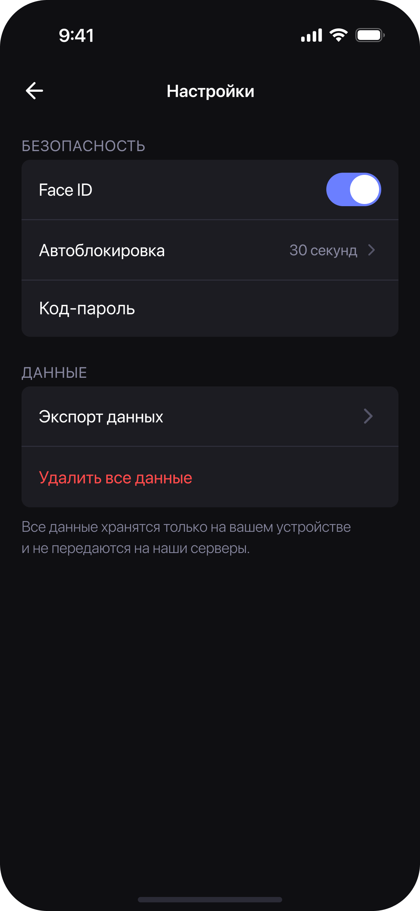
В настройках дисклеймер, что документы хранятся только на устройстве пользователя.
Данные документов — чувствительная информация. Доверие строится не через мелкий шрифт в политике конфиденциальности, а через явные сигналы в самом интерфейсе. Фраза про данные — в настройках, крупно, без юридического языка.
Автоблокировка настраивается: от «30 секунд» до «5 минут». Пользователь выбирает баланс между безопасностью и удобством сам. Стандартное «Никогда», как в системе, решил не добавлять, для безопасности лучше ограничить.
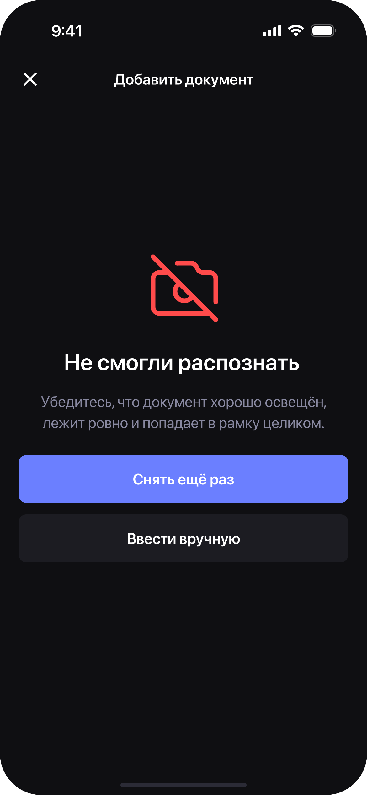
Не распознали — объясняем почему, и что делать. Два пути вперёд: снять ещё раз или ввести вручную.
Ошибки — это сценарий, не исключение. Плохое освещение, смазанное фото, неудобный угол — это случается. Экран ошибки не тупик, а развилка с двумя понятными путями вперёд.
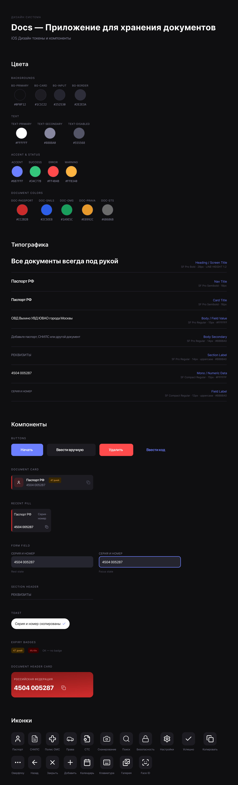
Приложение проектировал без пользовательских интервью — на основе анализа сценариев и здравого смысла. В реальном проекте первый шаг — это наблюдение за тем, как люди реально ищут данные документов в стрессовых ситуациях. Это могло бы изменить приоритеты.
Онбординг можно сделать умнее: предложить добавить первый документ прямо в процессе — не после нажатия кнопки на пустом экране, а ка часть первого запуска.
Проектная работа второй ступени Школы дизайнеров Бюро Горбунова, 20 поток.